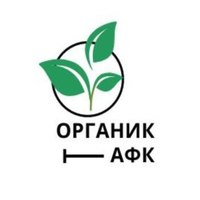

ПРОВЕРЕНО ЭКСПЕРТАМИ.
Состав:
Органика 44.4%, азот 14.7%, калий 11.8%, фосфаты 16.1%, фосфор 8.9%,
зола 11.2%, аммонийный азот 0.26%
Универсальное натуральное удобрение «ОрганикАФК»
• Полностью натуральный состав, оказывающий положительное
воздействие на ваши растения и почву
• Абсолютно универсально,
используется для любых видов растений и не требует других удобрений
• Разработано под чутким руководством учёных и прошло проверку в
лаборатории и на полях Приморского научного-исследовательского
института
Общая информация
«ОрганикАФК» - это уникальное органоминеральное удобрение, как по
составу, так и по действию. Оно одно заменяет все виды удобрений.
Это универсальное органоминеральное удобрение очень эффективно
при возделывании картофеля, овощных культур; оно исключительно
подходит для подкормки роз, гортензий, фиалок и других комнатных
цветов; малины, клубники, земляники, голубики и садовых деревьев.
B результате многолетних экспериментов, все компоненты тщательно
подобраны по составу и количеству в общей массе, что обеспечивает
максимальный эффект при применении.
Исследования
Перед запуском в производство, смесь прошла проверку в лаборатории
Государственной агрохимической службы «Приморский».
Смесь успешно испытана на полях овощной станции в п. Суражевка и
Приморского научно-исследовательского института сельского хозяйства в
п. Темирязевский.
Был проведён научный эксперимент в Федеральном
научном центре агробиотехнологий Дальнего Востока имени А. К. Чайки, в
результате которого экономический эффект урожая картофеля, при
использовании удобрения, был равен 478% от контрольного образца.
Инструкция
Рассыпать по поверхности, прикопать на глубину 5 см. и обильно полить.
НЕ РАЗВОДИТЬ В ВОДЕ!
Дозировки:
Овощные – 20-40 г/м²; ягодные кустарники – 100 г/куст; плодовые,
косточковые деревья – от 200 г/дерево; газон – 50 г/м²; цветы – 50-100
г/м²; декоративные растения – 50-100г; виноград – 100 г/куст; грядки –
40-100 г/м².
Применяется с марта по октябрь.
Весной: вносится 1 раз перед посадкой.
Летом: 2-3 раза с
интервалом в 14 дней.
Осенью: 1 раз перед периодом покоя
растения.
О нас
Многолетний опыт исследований и разработок позволил нашим учёным
вывести универсальную технологию удобрения. Вам больше не нужно искать
миллион разных ингредиентов для своего сада или дачи, теперь
достаточно купить всего одну упаковку нашего продукта. Учёные,
работавшие над ОрганикАФК, тщательно вымерили количество всех
необходимых растению компонентов и вывели идеальное их соотношение.
ОрганикАФК состоит только из природных компонентов, которые на 99%
усваиваются растением.
Контактная информация
Компания ООО Дальневосточные инновационные технологии
Контактное
лицо: Лунеков Игорь Петрович
Номер телефона: 89149799102
Вопрос-Ответ
— Что такое ОрганикАФК?
— Данная смесь разрабатывается с 1994-1996 годах. Органическая
составляющая представлена торфом рыбной, крабовой мукой, водорослей
ламинарии. Удобрение содержит 44% органических веществ, 14.7% азота,
11.8% калия, 8.9% фосфора, 16.1 % фосфатов природного происхождения,
на 99% усваивающихся растениями.
— Каких результатов ожидать?
— Испытания показали, что урожайность томатов в среднем на 35%,
урожайность баклажан повысилась в 1.5 раза, а белокочанной капусты в 2
раза. Урожайность перца сорта «Свежесть» увеличилась на 2.2 тонны с
гектара. В 2022 году проведены испытания удобрения при выращивании
картофеля. Урожайность повысилась на 478%, Так же в ходе испытаний
было достоверно установлено, что данная смесь оказывает губительное
действие на растительных паразитов.
— Для всех ли растений можно
использовать ОрганикАФК?
— ОрганикАФК абсолютно универсальное
удобрение, но на данный момент оно больше всего подходит для растение
из сада и огорода.
Отзывы
Сергей
«На акции случайно подарили удобрение, попробовал на картошке и
цветах, результат понравился, там, где применял, результат в два раза
лучше, товар купил на Вайлдбериз, продавца рекомендую»
Ольга
«Решила экспериментально использовать удобрение для одного дерева, в
моём случае, это слива, результат шокировал»
Игорь
«Я тут вишню реально удобрял этим удобрением. Сейчас урожай такой, что
ветки гнутся»